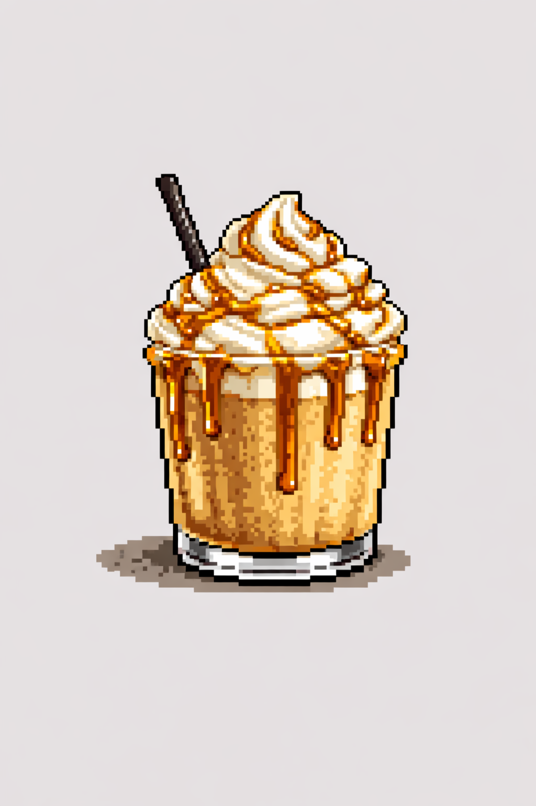
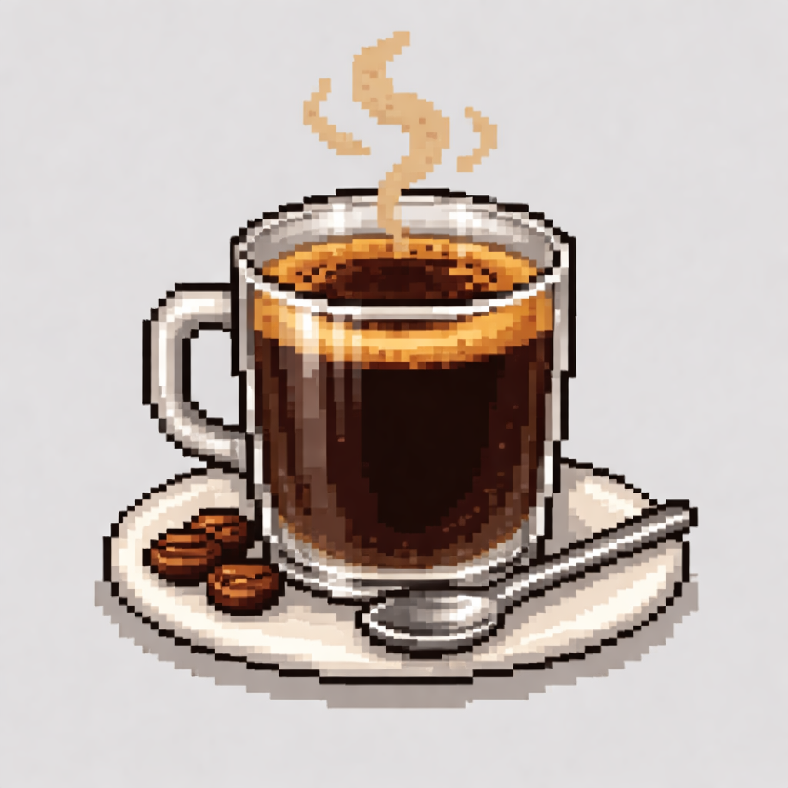
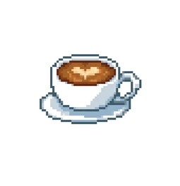

Step into Pixel Brew Café, a retro-inspired virtual coffee brewing simulator where you can explore classic coffee drinks and experience the process of crafting them in a playful arcade-style interface. Discover new flavors, experiment with brewing styles, and enjoy the charm of a pixel-art café world.

A refreshing blended coffee drink topped with creamy foam and sweet flavors.

A smooth espresso diluted with hot water creating a rich and balanced coffee flavor.

A creamy espresso drink combined with steamed milk for a smooth and velvety taste.
Pixel Brew Café is a retro-inspired virtual coffee brewing simulator designed to combine the cozy atmosphere of a café with the charm of classic 8-bit arcade games. The simulator allows users to explore different coffee drinks and understand the basics of brewing in a fun and interactive way.
Each coffee on the menu represents a unique brewing style. From bold espresso-based drinks to creamy milk-based beverages, users can explore the ingredients, preparation process, and flavor profiles that make each drink special. The goal of the simulator is to make coffee discovery enjoyable while presenting the experience through a nostalgic pixel-art interface.
Inspired by old-school video games, Pixel Brew Café turns the coffee brewing process into a playful digital experience. Users can select a drink, learn about its preparation, and simulate the steps involved in crafting the perfect cup.
Whether you are a coffee enthusiast, a casual café visitor, or someone who simply enjoys retro game aesthetics, Pixel Brew Café offers a creative environment where technology, coffee culture, and pixel-art design come together.